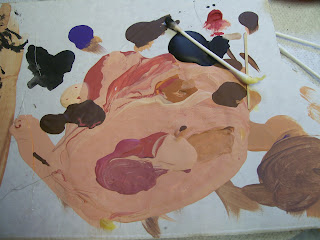

Touch up paint
5/1/2012
I recently repainted a figure for a customer who then asked me a question I've received numerous times, but still struggle to answer satisfactorily:
"What colors and brand of paint will I need for touch up in the future?"
Brand? That's easy. I prefer Ceramcoat acrylic paint. I purchase my paints at either local Hobby Lobby stores or on-line.
Colors? That's where it becomes difficult. Ceramcoat comes in dozens of colors, but none are just right (my opinion) for flesh color. So I mix my own, for each individual figure, mixing paints on a "palate" (piece of white cardboard). Usually I blend colors Medium Flesh, Autumn Brown, and Terra Cotta to arrive at the shade of "flesh" I use to paint the head and hands of a Caucasian figure.
But only the neck of the figure is covered with flesh paint with no color shading. All the rest of the head: ears, cheeks, chin, above the upper lip and the eyes - even the forehead have various color shadings of varying intensity. I use a variety of colors to achieve the shading: Rose and Reds of several shades, Browns of various shades, on occasion even a blue, white or yellow.
It is the color shading on a figure that brings life and depth to the appearance of a figure professionally painted. It's not "paint-by-number". When I started building figures, I dreaded the painting process. But after painting literally thousands of figures, I look forward to the painting which has become one of my favorite parts of the job!
{kind=link}
"What colors and brand of paint will I need for touch up in the future?"
Brand? That's easy. I prefer Ceramcoat acrylic paint. I purchase my paints at either local Hobby Lobby stores or on-line.
Colors? That's where it becomes difficult. Ceramcoat comes in dozens of colors, but none are just right (my opinion) for flesh color. So I mix my own, for each individual figure, mixing paints on a "palate" (piece of white cardboard). Usually I blend colors Medium Flesh, Autumn Brown, and Terra Cotta to arrive at the shade of "flesh" I use to paint the head and hands of a Caucasian figure.
But only the neck of the figure is covered with flesh paint with no color shading. All the rest of the head: ears, cheeks, chin, above the upper lip and the eyes - even the forehead have various color shadings of varying intensity. I use a variety of colors to achieve the shading: Rose and Reds of several shades, Browns of various shades, on occasion even a blue, white or yellow.
 |
| My "palate" after painting one coat of paint on a figure. I start anew with a blank "palate" each and every coat, three coats of paint on each figure. |
{kind=link}